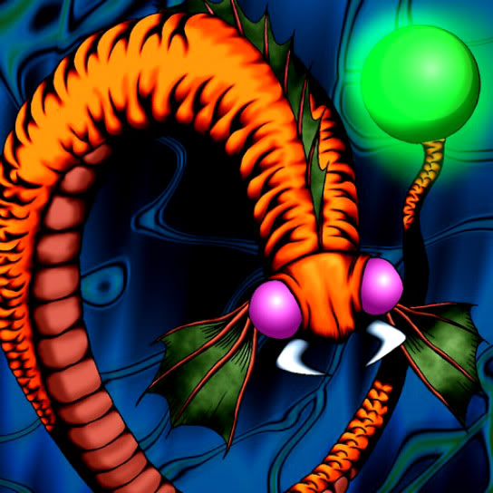

Aqua Snake

Description: "Spellbinds the opposing enemy for 1 turn when this card is flipped face-up in battle."
STATS
ATK: 1050
DEF: 900DECK COST
Deck Cost per Card: 25EFFECT NOT IMPLEMENTED
Fusion List (3 Possible Fusions)
- Aqua Snake + Bolt Penguin = Bolt Escargot
- Aqua Snake + Kaminarikozou = Bolt Escargot
- Aqua Snake + Petit Dragon = Spike Seadra